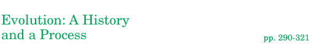

There's an expression that the only constant in the universe is change. According to evolutionary theory, this expression certainly applies to life. The kinds of organisms on Earth—the species—have changed over time. Imprints in rocks of ammonites, a marine organism that lived more than a hundred million years ago, are remnants of the past. Many other species have come and gone, and new species have emerged. But even as change is part of life, so is continuity. Scientific evidence suggests that all of life is united by descent from the first microbes that appeared on early Earth. In this chapter, you will learn how life evolves through the process of natural selection. Before you begin, go online to the WebQuest to explore connections between birds and reptiles based on the fossil record.